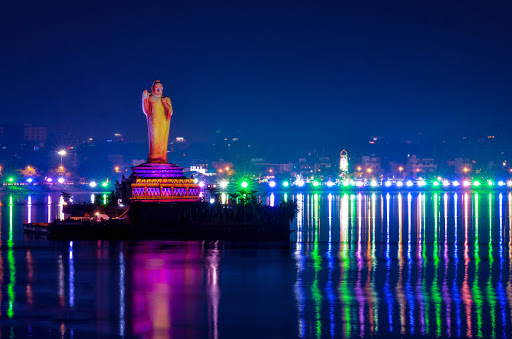

Hussain Sagar Lake is a landmark attraction that is a symbol of the tourism potential of Hyderabad.
Boating and water sports are a regular feature of the Hussain Sagar Lake.
Telangana Tourism operates regular boating facilities at this vast lake.
To experience the perfect adrenaline rush, one can take up speed boating on modern boats that are well maintained.
Equipped with safety parameters like life jackets and buoys,
the thrill of cruising through a speedboat on Hussain Sagar Lake is an unparalleled experience.
One can crisscross the lake with the help of experts at the boating facility here.
The rising of waves during the high speed cruise makes the experience all the more worthwhile.
The sunset on the lake while travelling on a boat is a delightful experience.
One can visit the famous monolith of Lord Buddha installed at the center of the lake on a structure called
‘Rock of Gibraltar’.
From the center of the lake, the panoramic view of Hyderabad’s landscape is a must-see.